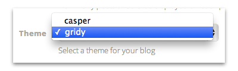
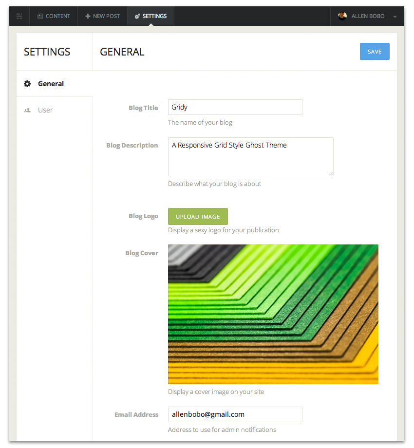
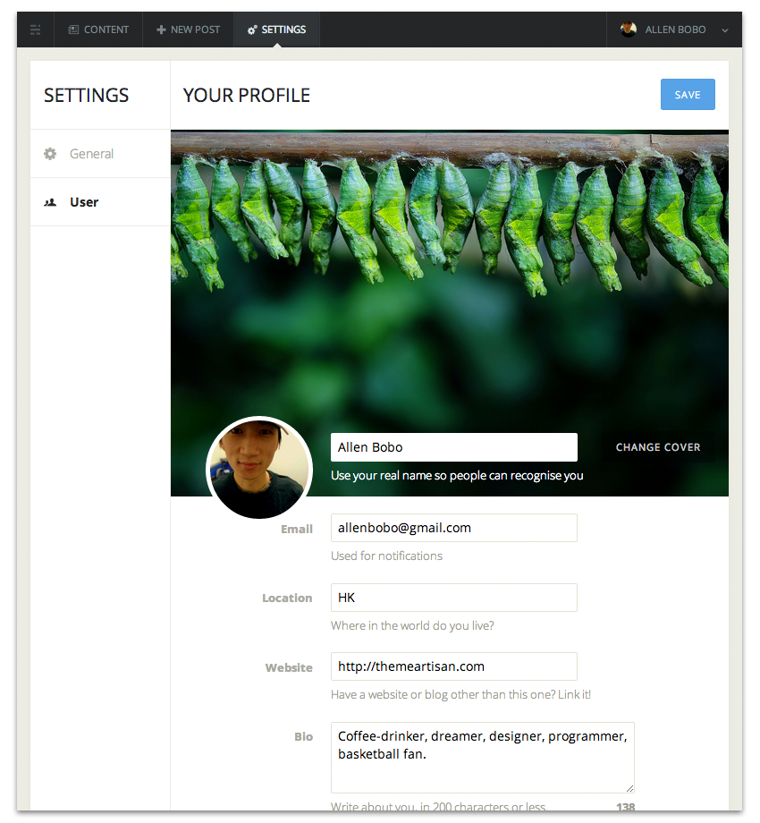

Gridy
A Responsive Grid Style Ghost Theme
Firstly, a huge thanks for purchasing this theme, your support is truly appreciated! This document covers the installation, set up, and use of this theme and provides answers and solutions to common problems and issues - we encourage you to read this document thoroughly if you are experiencing any difficulties.
This theme is compatible with Ghost Version 0.3.3 and later.
Most JavaScript enabled Browser will make this theme work with no issues! PC or Mac system does not make the difference as well. It has been tested on:
-
Firefox 3.6 and later
-
Safari 4 and later
-
Opera 11.10 and later
-
Internet Explorer 9 and later
-
Google Chrome
-
Web-kit based mobile browsers: Safari, Dolphin, Chrome, Android 2.2+ stock browser (was tested on iPad2, iPhone 4 and 4S, HTC Legend)
To install this theme you must have a working version of Ghost already installed. For information in regard to installing the Ghost platform, please see the Ghost Guide - Installing Ghost & Getting Started.
When you are ready to install a theme, you must first upload the theme files and then activate the theme itself. Using your FTP program, upload the non-zipped theme folder (gridy) into the /content/themes/ folder on your server.
Once the theme is uploaded, you need to:
-
Restart ghost
-
Log in to your dashboard (<your URL>/ghost)
-
Navigating to Settings > General
-
Select “gridy” from the theme dropdown and save.

To config the blog general settings, you can do so by navigating to Settings > General.
-
Blog Title: Changes your Blog’s title.
-
Blog Description: Changes your Blog's description.
-
Blog Logo: Upload a Logo for your blog in either '.png', '.jpg' or '.gif'.
-
Blog Cover: Upload your blog cover image in either '.png', '.jpg' or '.gif'.
-
Email Address: This is the email admin notifications are sent too.
-
Posts per page: This is how many posts are displayed per page. This should be a numeric value.
-
Theme: This will list all the themes in your content/themes directory. Selecting one from the dropdown will change your blog's look.

To config the blog user settings, you can do so by navigating to Settings > User.
These are the settings that control your user / author profile.
-
Your Name: This is your name that will be used to credit you when you publish a post.
-
Cover Image: Your profile cover image is uploaded here, in either '.png', '.jpg' or '.gif' format.
-
Display Picture: This is where you upload your personal display picture, in either '.png', '.jpg' or '.gif' format.
-
Email Address: This email will be available as your public email and also where you wish to receive notifications.
-
Location: This should be your current location.
-
Website: This is your personal website URL or even one of your social network URLs.
-
Bio: Your bio is where you can enter a 200 character or less description about yourself.

The theme comes with built-in options that extend the functionality of Ghost. This section will document those options and how to use them successfully.
To config the theme options, you can do so by editing configuration file.
-
Find theme-options.hbs file in the gridy > partials folder
-
Edit the file with a text-editor and save it.
Grid
-
layout: Used for defines the grid layout. This can be a single Value, or even more values. Available value: from 2 to 14
- 2-9 (Special Grids), 2 = 2 Entry 3 = 3 Entry etc.
- 11,12,13,14 (for Square Grids. 11=3 in the Row, 12= 4 in the Row, 13=5 in the Row, 14=6 in the Row)
- The layout is an array where you define i.e. an array like [5,3,13] which means, the first 5 item will be arranged in "Grid Type 5", the next 3 item will be arranged in "Grid Type 3" the next 5 item will be arranged in "Grid Type 15". If you have more entries here, then the Array will be looped and the Gallery form starts from the first Defined Grid Type again.
-
animation: This Option defines which Transition is used if the Entries disappearing or appearing after a filter has been activated. Possible settings: fade, rotate, scale, rotatescale, pagetop, pagebottom, pagemiddle
For example:
...
grid : {
layout : [10],
animation : 'pagetop'
}
...
Google Analytics
For example:
...
googleAnalytics : { //Google Analytics Settings
enabled : true,
account : 'UA-XXXXXXXX-X' //Replace this value by your Google Analytics account
}
...
-
enabled: Used for turn on/off Disqus comments system. Available value: true, false. Default value is true
-
shortname: Your Disqus shortname (What’s a shortname?)
For example:
...
disqus: { //Disqus Settings
enabled : true,
shortname : 'your-disqus-shortname'
}
...
Social Accounts
-
enabled: Used for turn on/off social accounts in footer. Available value: true, false. Default value is true
-
colorful: Used for turn on/off the color of social account icon. Available value: true, false. Default value is true
-
accounts: Used for configure your social accounts.
For example 1: (Twitter, Facebook and Google+)
...
socialAccounts: { //Social Accounts Settings
enabled : true,
colorful : true,
accounts : {
'twitter' : 'your-twitter-url',
'facebook' : 'your-facebook-url',
'google-plus' : 'your-google-plus-url'
}
}
...
For example 2: (Only RSS)
...
socialAccounts: { //Social Accounts Settings
enabled : true,
colorful : true,
accounts : {
'rss' : '{{@blog.url}}/rss/'
}
}
...
After you are finished adjusting the settings and save the file. You can check your changes by visiting the Blog URL.
- Added: more theme options(grid layout, grid animation)
- Added: email and donation social account
- Improved: blog header style in small screen devices
- Fixed: logo didn’t appear rounded in safari
- Initial Release
If you face problems with the installation or customization of our product please do not hesitate to contact us via: